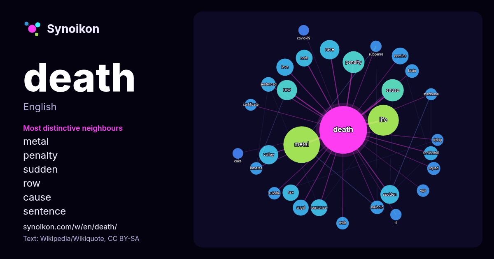

English · popular word
death
The words found around it in 1698 instances from Wikipedia, Wikiquote, Hacker News.

Most distinctive neighbours
- metal 66×
- penalty 27×
- sudden 24×
- row 23×
- cause 20×
- sentence 17×
- note 15×
- accidental 15×
- valley 14×
- comics 14×
- melodic 13×
- sentenced 13×
- life 13×
- tax 13×
- race 12×
- ego 12×
- inmates 11×
- brain 11×
- wish 11×
- love 10×
× = how many times more often than in general Wikipedia text.
Most frequent neighbours
- metal 95
- life 68
- film 53
- american 43
- cause 35
- game 35
- album 34
- penalty 34
- row 29
- race 27
- valley 26
- sudden 25
- band 24
- love 21
- comics 20
- note 20
- sentence 20
- released 19
- tax 19
- angel 18
In context
- Death is the end of an organism's life. It is the irreversible cessation of biological functions that sustain a living organism. Entropy, nature's ten … Wikipedia snippets · Death
- Death row, also known as condemned row, is a place in a prison that houses inmates awaiting execution after being convicted of a capital crime and sentenced Wikipedia snippets · Death row
- grand jury declined to bring criminal charges in the case, deeming Wells' death consistent with drowning and finding no evidence of criminal conduct. The Wikipedia snippets · Death of Nolan Wells
- The Death Riders are a professional wrestling stable performing in All Elite Wrestling (AEW), Consejo Mundial de Lucha Libre (CMLL), New Japan Pro-Wrestling Wikipedia snippets · Death Riders
- Death of Death may refer to: The Death of Death in the Death of Christ, a 1648 book by John Owen The Death of Death, a 2000 comic miniseries by George Wikipedia snippets · Death of Death
- "Death, death to the IDF", or DDTTIDF or DDTTIOF, is a political chant and slogan that emerged during the Gaza war and Gaza genocide in protest against Wikipedia snippets · Death, death to the IDF
- The following notable deaths occurred in 2026. Names are reported under the date of death, in alphabetical order. A typical entry reports information Wikipedia snippets · Deaths in 2026
- Death Note (stylized in all caps) is a Japanese manga series written by Tsugumi Ohba and illustrated by Takeshi Obata. It was serialized in Shueisha's Wikipedia snippets · Death Note
More words
- art
- autumn
- bell
- bread
- bridge
- cat
- city
- climate
- clock
- desert
- dog
- family
- food
- forest
- garden
- god
- gold
- health
- heart
- history
- honey
- horse
- island
- language
- life
- map
- mirror
- money
- mother
- mountain
- nature
- power
- rain
- road
- salt
- science
- shadow
- silence
- song
- star
- storm
- summer
- tea
- time
- train
- truth
- water
- winter
- work
Precomputed on 2026-10-09 with default settings (±5 words, medium corpus). The interactive map can refresh it with live data.